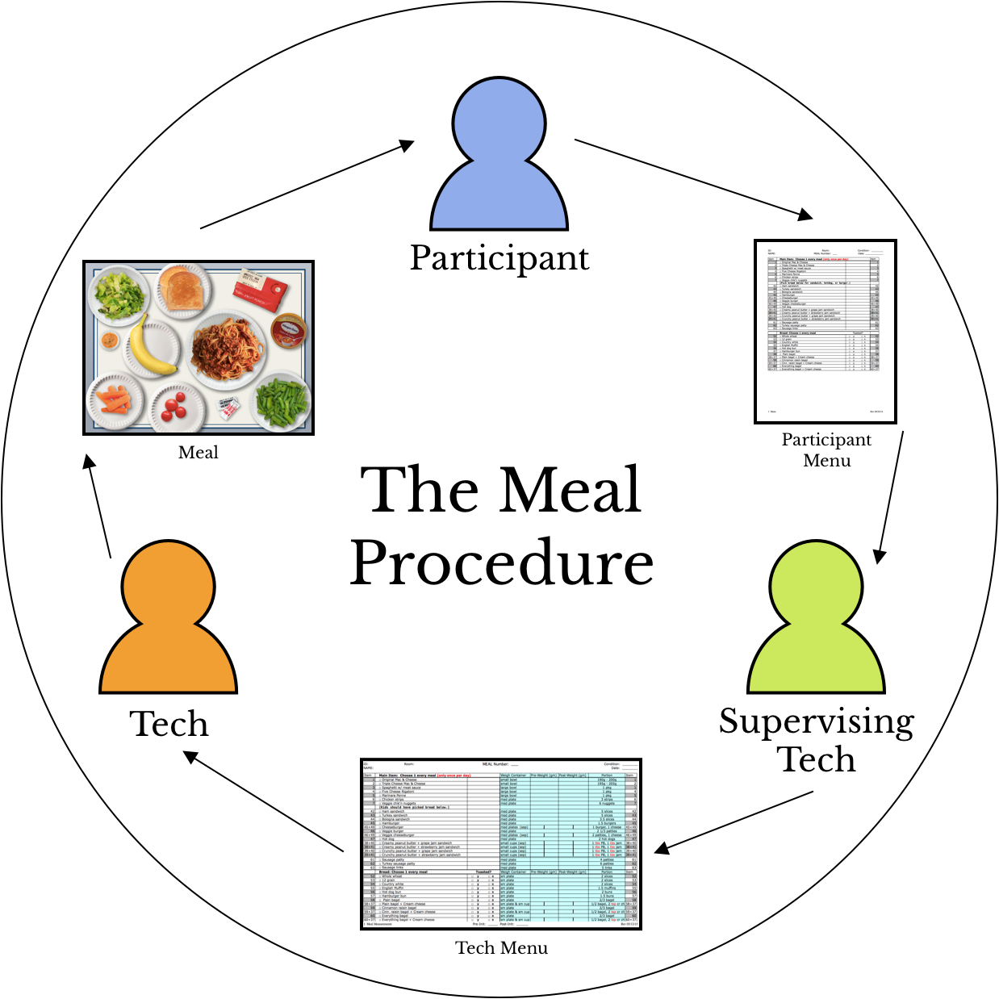
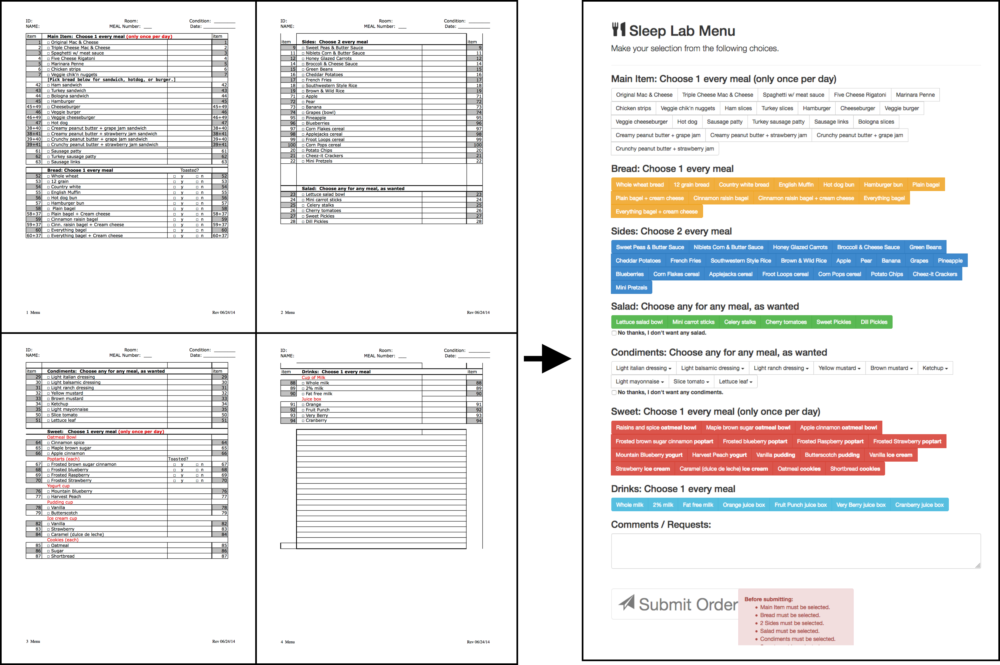
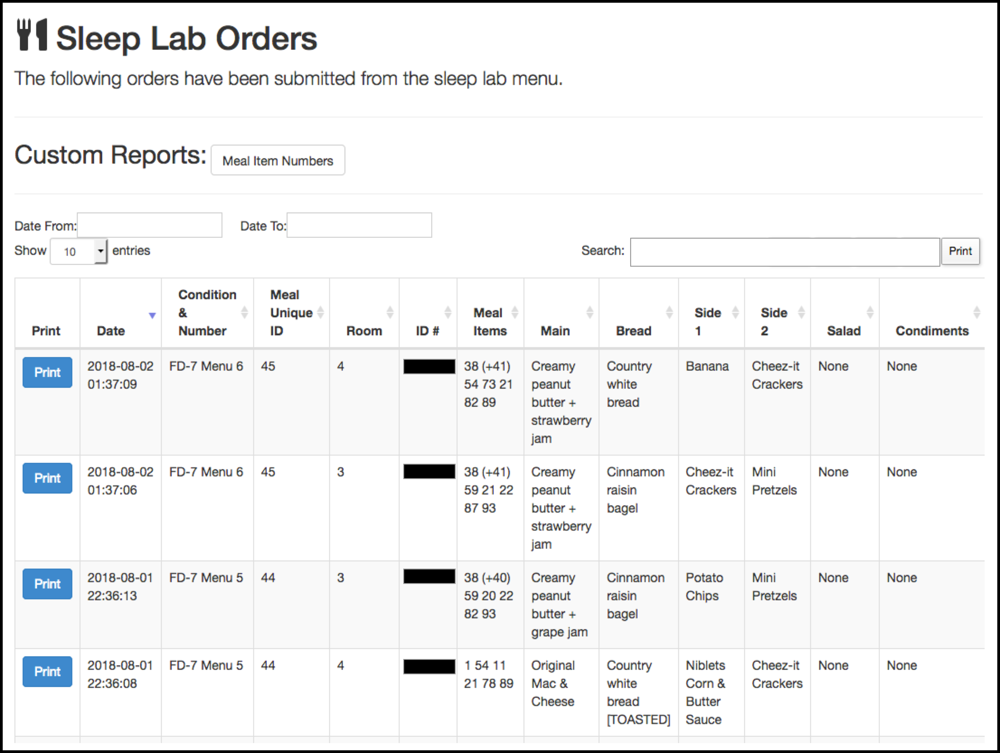
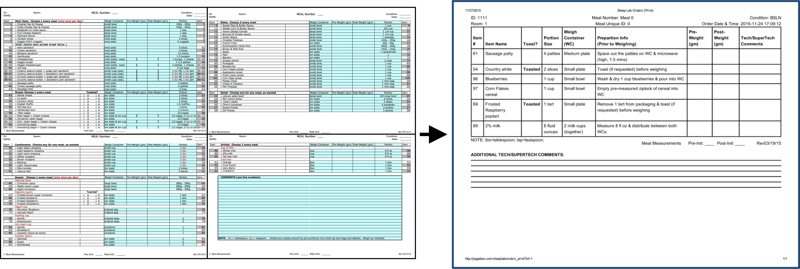

ashten l. bartz
Food for Thought:
Digitizing a menu ordering system for a sleep & caloric intake research study
Overview
Adolescence is a time of immense, puberty-driven change: a burgeoning sense of self; increased autonomy; experimentation with new social and romantic relationships; the exploration of academic and extracurricular interests....
As if balancing good grades and going on your first date weren’t already challenging enough, having several conflicting priorities makes it even more difficult for teens to reserve time for an essential, but devalued activity: getting sufficient sleep.
Research demonstrates that insufficient sleep during adolescence increases one’s risk for obesity by 60 to 90%, and sleep and eating habits established during these formative years can remain with an individual for decades to come. This evidence, and the unparalleled importance of sleep in nearly every domain of waking life, made it especially meaningful for me to contribute to a sleep research study investigating food choices in healthy normal-weight and overweight adolescents.
TIMEFRAME:
This project took place during year 1 of a 5-year NIH-funded grant. Participants lived at the sleep lab for almost 2 weeks on a shifted sleep schedule, where the length of the "day" they experienced was longer than our typical 24-hour day, resulting in shifted bedtimes, rise times, and meal times.
MY ROLE:
After finishing undergrad, I worked at the lab for 5 years, assisting with this research study in various ways from its onset to its conclusion. At the time of this particular piece of the project, my role as a data management research assistant was to review all meal data at the end of the year 1 collection period and work towards finalizing a cleaned & coded data set.
PROBLEM:
During this review, I found that the data were compromised by errors due to challenges experienced by users of the paper menu. I approached the lab director with these findings and a proposition to reconsider the existing mealtime procedures before year 2 of the research study began.
PROCESS:
The lab director agreed we needed to overhaul the system, and so I conducted user research to inform the transformation of the paper menu into a computerized platform.
SOLUTION:
The new digitized ordering system was successfully implemented and used for the remaining 4 years of the grant, markedly reducing human errors associated with the former paper menu system.
Understanding the Problem Space
The Mealtime Procedure
The first step in understanding the problem space required a closer look at the mealtime procedure.

1. The participants were given a 4-page paper participant menu and were instructed to fill it out. They chose from over 100 menu items while adhering to strict rules regarding selections from each category (e.g., choose 1 entree; 2 sides; etc.).
2. The supervising technician transcribed the selections from the participant menu to the 4-page paper tech menu, which was identical to the participant menu, but also included meal preparation information that couldn’t be seen by participants, such as portion size.
3. The tech menu was used in the kitchen by the techs to specify each item’s portion size. It also served as a worksheet for recording each item’s pre-weight after it had been prepared.
4. The meal was served by the tech to the participant, who had 20 minutes to consume as much or as little of any of the items served as desired.
5. The leftovers were returned to the kitchen, where the supervising technician recorded the post-weight of each food item on the tech menu.
Categorizing Problem Types
The next step was to categorize the types of errors discovered, which would provide context into potential flaws in the current menu system that contributed to their recurrence. Each of the 3 error-types (summarized below) were associated with a user group.
| Type | Context | Error | Example |
|---|---|---|---|
| 1: Participant Order Error |
Participants were observed flipping back-and-forth between the 4 pages of the menu while they assembled their meals, following the rules listed at the top of each category regarding mandatory selections. | If they didn’t carefully double-check their entire menu before submitting it, it was possible to fail to select a food in a mandatory category. | Participant didn’t order an item from the mandatory entree category |
| 2: Supervising Tech Transcription Error |
The supervising techs were responsible for transcribing 4 participant menus over to the 4 associated tech menus while also overseeing the in-lab protocol. | Mistakes were made during this transcription process before being handed off to the techs who would prepare the meals using only the new, transcribed tech menu. | Supervising technician neglected to copy over an item the participant ordered Supervising technician copied all menu items from participant A onto the tech menu for participant B |
| 3: Tech Meal Preparation Error |
The 4 techs had to collectively prepare and pre-weigh a meal for each of the 4 participants using shelf-stable and microwavable frozen foods available on the menu during a time-sensitive 18-minute period. The 4-page tech menu contained all 100 meal items available, including their portion size and appropriate weigh container, but preparation instructions had to be memorized by the techs. | Visually locating 6+ food items amongst the 100 possible selections on 4 different pages made it easy to neglect to cook an item, accidentally prepare the wrong item, or serve the wrong portion size. | The tech forgot to serve the drink, which is the category listed on the last page of the menu. The tech served the entire package of french fries, though the portion size was actually ⅓ of the package. The tech served corn pops cereal instead of corn flakes cereal. |
User Interviews
I spoke with both supervising techs and lab techs about their experiences using the paper menu and found that there were 2 additional challenges at play.
| Circadian Influences | Cognitive Load |
|---|---|
| The 24-hour nature of this study required techs to do shift-work, which meant they may have gotten insufficient sleep prior to their shift or may experience drowsiness during their shift, both of which increase the likelihood of making errors. | Both supervising techs and lab techs had to carry out other tasks while also interfacing with the paper menu, adding additional cognitive burden to already challenging tasks, increasing the likelihood of making errors. |
Summary of the Problem Space Findings
The data review and user interviews highlighted the unnecessary complexity of the current system and the resulting tech errors it facilitated. These errors were problematic because they not only jeopardized the data, but they also sent unintended messages to the participant. If the meals served differed from the meals ordered, the participant might begin to make incorrect assumptions about the study design, when in actuality our only goal was to see what was eaten of the food presented at each meal.
Designing a Solution
I presented my research findings to the study director, and with the other members of the lab, we gradually formulated goals during the iterative design process of working with the digital menu programmer, which are summarized below.
Our Goals
| Goal | Description | Outcome |
|---|---|---|
| 1 | Streamlined but comparable design to the existing paper menu system | Intuitive system transition for indoctrinated users & year 1 data comparable to subsequent 4 years |
| 2 | Participant interface coding prohibits menu submission before all mandatory items are selected | Prohibition of error-type 1 |
| 3 | Automatic generation of a printable tech menu for meal preparation | Elimination of error-type 2 |
| 4 | Intuitive supervising tech interface for menu printing | Simplification of supervising tech role while overseeing the protocol |
| 5 | Populate only the items ordered on a 1-page menu | Increase menu readability, eliminate extra pages, and reduce likelihood of error-type 3 |
| 6 | Include a new field for meal item preparation instructions | Decrease tech cognitive load associated with recalling cooking instructions from memory and improve meal preparation standardization across techs and across study years |
Unfortunately the computerized system wouldn’t be able to address errors related to circadian influence, but we were hopeful that these other improvements would help to offset circadian-related mistakes due to facilitated user experience.
User Testing
We had members of the lab staff test the first few iterations of the prototype, incorporating feedback from 4 critical user types:
| User | Role |
|---|---|
| Lab Techs | Use the menu for meal preparation and pre-weighing |
| Supervising Techs | Use the menu for post-weighing |
| Data Management Staff | Use the menus for data entry, cleaning, and coding |
| Research Assistants | Use the menus to track which foods are popular when restocking the fridges, freezers, and pantry |
We weren’t able to interview actual participants about their experience with the ordering interface, so all staff also assessed the participant interface and gave feedback about impressions and ease of use.
Design Iteration
We worked with the programmer on a few phases of design iteration. Some early prototypes are featured below:

The iteration process helped to illuminate additional ways in which we could improve the menu system, beyond the goals we had initially outlined. These new goals are summarized below:
| New Goal | Description | Example |
|---|---|---|
| 1 | Visually differentiate between meal items on the participant interface | Use of color coding for each food category Use of boldface font to distinguish between similarly flavored foods |
| 2 | Add an opt-out button to food categories on the participant interface | Addition of a mandatory “no thanks” button if no selections are made for optional food categories |
| 3 | Allow participants to review their menus before submission | Addition of a pop-up window summarizing all choices and an opportunity to make edits before final submission |
| 4 | Use stored menu orders to pre-populate a data entry file | Functionality to export a .csv file of all menu selections from the supervising tech interface to use as a data entry shell file |
| 5 | Use stored menu orders to depict trends for popular food items | Creation of an inventory interface to be used by research assistants to assist with daily shopping and meal item restocking |
The Final Products
The Participant Interface

The participant menu was converted from a 4-page paper document to a 1-page computer interface using color and boldface to distinguish between food categories and similar item flavors. The red pop-up window at the bottom of the page prevented a participant from submitting their menu until items from all mandatory categories had been selected. The submit button created a new pop-up window allowing a participant to review their summarized selections before further editing their menu or approving its submission.
The Supervising Tech Interface

The supervising tech interface replaced the previous need for supervising techs to transcribe the menus by automatically generating a tech menu after the participant had submitted their order. This intuitive interface allowed a supervising tech to quickly and easily print the menus and then return to their primary task, running the protocol.
The Tech Menu
